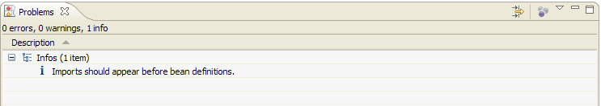
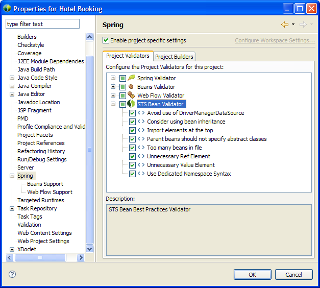

As outlined in Configuration Editing Enhancement, recommendations for best practices rules are visible in a bean configuration editor. All recommendations are also available as info messages in the Problems View.

In some cases, you may be unable to comply with a reported Spring best practice. It's also possible that a recommendation isn't appropriate for your particular situation. In such cases, the best practice can be disabled via Window -> Preferences -> Spring. Select the "STS Bean Validator" and disable any rules that you do not find helpful.
